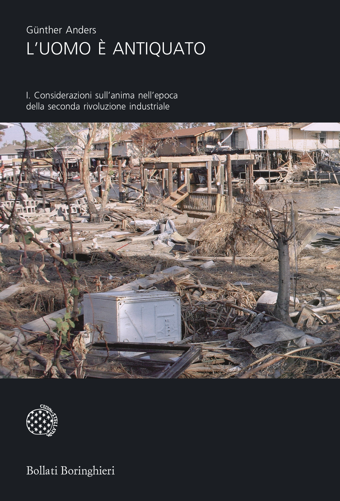
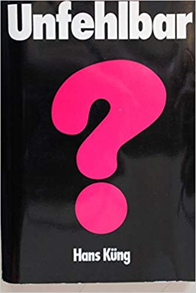
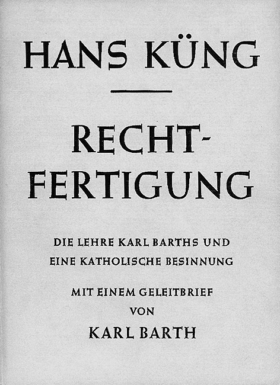
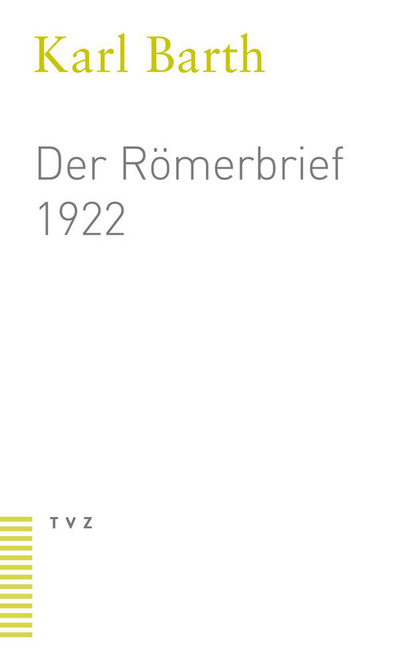

40:42 · 9 OPERE
Un omaggio ed un ricordo su Hans Küng.
Il filo del discorso
Il contributo ricorda Hans Küng dopo la morte del 6 aprile 2021 e ne valorizza il coraggio intellettuale. Il relatore rifiuta una biografia ridotta a date e incarichi: considera centrale la capacità di mettere in discussione le strutture del potere dall’interno, come accadde nella controversia sull’infallibilità. Le digressioni sui media, sulla tecnologia e sulla libertà di parola servono a distinguere per il relatore il dissenso autentico dalla critica che lascia intatti i propri presupposti. La scheda precisa che il provvedimento del 1979 riguardò l’insegnamento come teologo cattolico e non una perdita del sacerdozio. La seconda parte si concentra sul rapporto con Karl Barth, sul valore di una relazione culturale non ridotta a utilità e sul progetto di un ethos globale. Il relatore propone, come propria ipotesi, che il dialogo fra Küng e Barth abbia contribuito a maturare l’idea di un terreno etico comune oltre le differenze dottrinali. I richiami a Kant, Anders, Wells, Andersen e Morley collegano questa memoria alla difesa dell’autonomia del pensiero. La conclusione presenta l’etica condivisa come il lascito più fecondo del teologo, distinguendola nella nota editoriale da una fusione delle religioni.
I libri nel discorso

L’uomo è antiquato
Copertina del volume I: Bollati Boringhieri · 2007 · copertina del volume I
L’opera è pubblicata in due volumi. L’immagine mostra il volume I, Considerazioni sull’anima nell’epoca della seconda rivoluzione industriale, nell’edizione Bollati Boringhieri di riferimento. Il video non precisa il volume e non viene attribuito a questa edizione.
Günther Anders e il testo sull’antiquatezza dell’uomo riconoscibili nella trascrizione automatica antichità/arcaicità; titolo normalizzato.
Passaggio 4:51 ↗ · Fonti e libro ↗
Unfehlbar? Eine Anfrage (Infallibile? Una domanda)
Identificazione probabile
Copertina: Benziger, Zürich–Einsiedeln–Köln, 1970. Titolo italiano Infallibile? Una domanda. Copertina storica riprodotta dalla Stiftung Weltethos; nessun ISBN né esemplare posseduto dal relatore attribuiti per supposizione.
Copertina autentica vista integralmente: fondo nero, titolo bianco Unfehlbar, grande punto interrogativo rosa, Hans Küng in basso. La provenienza è la biografia della Fondazione, che la colloca presso il 1970. Il titolo italiano è una traduzione editoriale dell’opera e non quello stampato nell’immagine.
Libro di Küng sul problema dell’infallibilità papale, descritto come rottura con il magistero; identificazione con Unfehlbar? Eine Anfrage del 1970.
Passaggio 9:14 ↗ · Fonti e libro ↗
I vestiti nuovi dell’imperatore
Copertina: Rizzoli, 2014 · eBook di riferimento
I panni nuovi dell’imperatore e il bambino che dichiara il re nudo espliciti.
Passaggio 17:14 ↗ · Fonti e libro ↗
Risposta alla domanda: che cos’è l’Illuminismo?
Copertina della raccolta che comprende il saggio sull’Illuminismo: Firenze University Press · Sette scritti politici liberi · 2011 · a cura di Maria Chiara Pievatolo
Copertina del volume cartaceo FUP che comprende il saggio, riscontrato dal catalogo universitario. L’ISBN appartiene alla raccolta; il filmato non annuncia un’edizione e il titolo del saggio è un’identificazione probabile della citazione.
Kant, saggio che cos’è l’Illuminismo e invito al coraggio dell’intelletto espliciti.
Passaggio 24:33 ↗ · Fonti e libro ↗
La macchina del tempo
Copertina: Feltrinelli · Universale Economica, I classici
La macchina del tempo di H. G. Wells, Eloi, Morlock e libri che si sfarinano espliciti.
Passaggio 29:53 ↗ · Fonti e libro ↗
Rechtfertigung. Die Lehre Karl Barths und eine katholische Besinnung
Identificazione probabile
Pagina del titolo: immagine della Fondazione: Johannes/Benziger, 1957, con lettera introduttiva di Karl Barth. Immagine bibliografica del titolo fornita dalla Stiftung Weltethos; il nome del file contiene 1955, ma il libro è del 1957 secondo la bibliografia universitaria. Non identificata l’edizione del relatore.
Riproduzione bibliografica autentica vista integralmente: Hans Küng, Rechtfertigung, Die Lehre Karl Barths und eine katholische Besinnung, mit einem Geleitbrief von Karl Barth. Editore e data non sono visibili nell’immagine; questa non documenta una copertina o un frontespizio completo del 1957. Dati di edizione riscontrati separatamente nel catalogo universitario.
Saggio del giovane Küng che attira l’attenzione di Barth: probabilmente Rechtfertigung, tesi e volume del 1957, titolo non pronunciato.
Passaggio 31:09 ↗ · Fonti e libro ↗
L’Epistola ai Romani (Der Römerbrief)
Copertina: Theologischer Verlag Zürich, 22ª edizione 2020, 584 pagine, ISBN 9783290113636. Seconda versione del commento del 1922, distinta dalla prima redazione del 1919; copertina moderna di riferimento, non attribuita al filmato.
Copertina autentica TVZ vista integralmente: fondo bianco, Karl Barth in verde, Der Römerbrief 1922 in grigio, marchio TVZ e righe verdi in basso. Il 1922 stampato è l’anno della versione del testo e non quello della ristampa 2020.
Karl Barth e il testo dell’Epistola ai Romani espliciti; il riferimento è al commento teologico di Barth.
Passaggio 31:28 ↗ · Fonti e libro ↗
La libreria stregata
Copertina: Sellerio · La memoria 264 · 1992
Immagine autentica dell’opera, controllata visivamente; l’edizione di riferimento non è attribuita al filmato.
La libreria stregata esplicita come lettura consigliata sul rapporto fra cultura e mercato.
Passaggio 34:16 ↗ · Fonti e libro ↗
Apologia di Socrate
Identificazione probabile
Copertina del volume Apologia di Socrate. Critone: BUR · Apologia di Socrate. Critone · a cura di Maria Michela Sassi, 1993
Copertina autentica del volume BUR contenente Apologia di Socrate e Critone. Il secondo titolo non è aggiunto come citazione del video; l’autore del testo è Platone, con Socrate come figura protagonista.
Socrate senza denaro sufficiente per una ammenda, con amici disposti a garantirla: episodio compatibile con Apologia 38b, titolo non pronunciato.
Passaggio 34:30 ↗ · Fonti e libro ↗